Direct importer · Cutler Bay, Miami
Our vanities.
The best vanities in Florida, direct from the importer — every size we stock, with full specs and pricing. Vanities sold here include the vanity and full mounting kit. Want the complete look with mirror, faucet, and drain included? Check out our Combos.
Floating Vanity — White
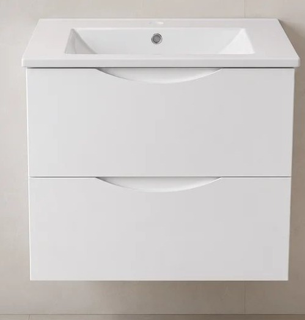
24" Floating Vanity — White
24" x 18" · Two drawers
Elegant floating vanity designed for modern bathrooms. Sleek white PVC construction offers a contemporary aesthetic that maximizes floor space. Two spacious drawers provide ample storage for toiletries and bathroom essentials while maintaining a clean, minimalist appearance. The durable PVC resists moisture and humidity, and the wall-mounted installation makes cleaning underneath effortless. Perfect for small to medium-sized bathrooms.
$290 USD
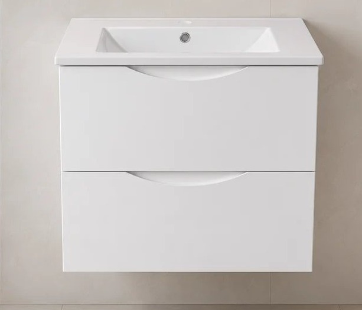
30" Floating Vanity — White
30" x 18" · Two drawers
Sleek and modern floating vanity designed to elevate your bathroom aesthetic. Durable white PVC construction resists moisture and humidity. Two spacious drawers provide convenient storage while keeping countertops clutter-free. The floating design creates an airy feel, making smaller bathrooms appear larger while offering easy floor cleaning underneath. Mounts securely to wall studs for stability and longevity.
$345 USD
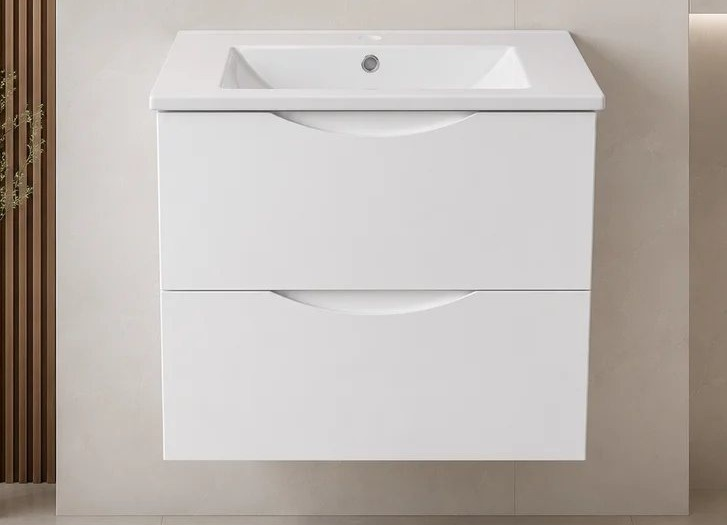
36" Floating Vanity — White
36" x 18" · Two drawers
Sleek and modern floating vanity designed to maximize your bathroom space. White PVC construction resists moisture, and two spacious drawers store bathroom essentials while maintaining a clutter-free countertop. The floating design promotes easy floor cleaning and creates an open aesthetic suitable for contemporary bathrooms.
$415 USD
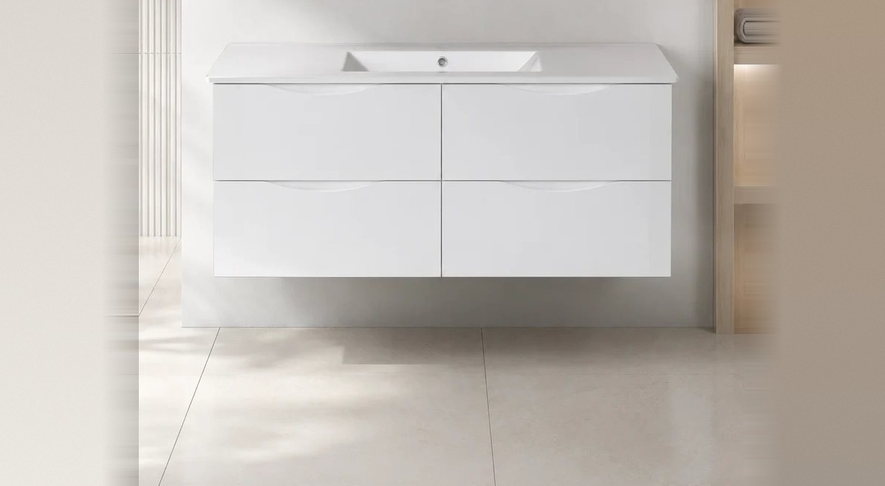
48" Floating Vanity — White
48" x 18" · Four drawers
Sleek floating vanity built to make a statement in larger bathrooms. Durable white PVC construction resists moisture and daily wear. Four spacious drawers keep towels and toiletries organized while maintaining a clean, clutter-free countertop. The wall-mounted design creates an open, airy feel and makes floor cleaning effortless — perfect for primary baths and busy family bathrooms.
$550 USD
Most popular
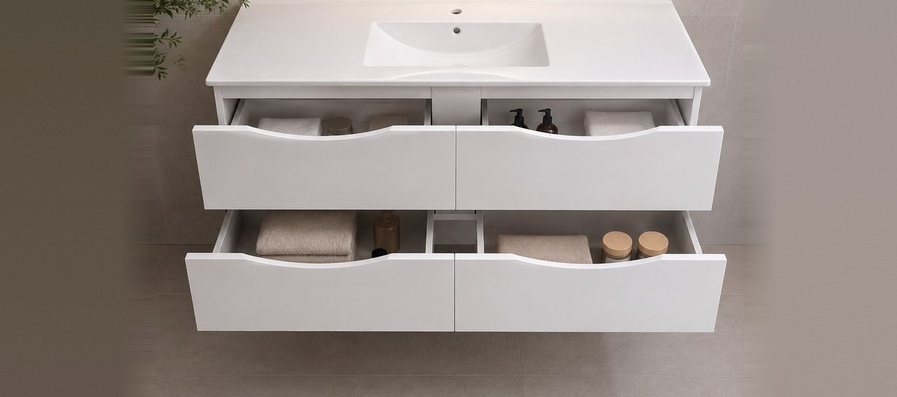
60" Floating Vanity — White, Single Sink
60" x 18" · Four drawers · Single sink
Elegant floating vanity designed for modern bathrooms. Sleek 60" wide by 18" deep white PVC construction resists moisture and humidity. Four spacious drawers provide generous storage while the single-sink layout keeps the look streamlined. The floating design creates an open, airy feel while maximizing floor space — perfect for a primary bath that wants scale without a double-sink footprint.
$725 USD
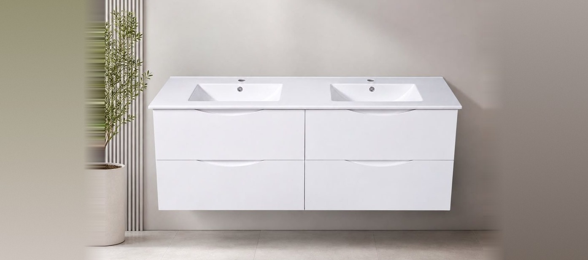
60" Floating Vanity — White, Double Sink
60" x 18" · Four drawers · Double sink
Elegant floating vanity designed for modern bathrooms. Sleek 60" wide by 18" deep white PVC construction resists moisture and humidity. Includes four spacious drawers for organized storage and a double sink basin for shared use. The floating design creates an open, airy feel while maximizing floor space — perfect for master baths or shared bathrooms.
$745 USD
Floating Vanity — Wood
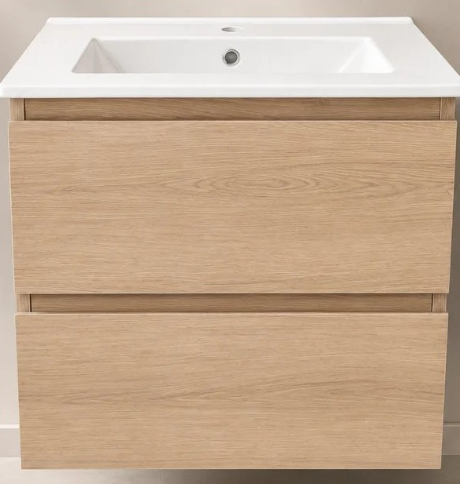
24" Floating Vanity — Wood
24" x 18" · Two drawers
Modern bathroom elegance in a compact footprint. Crafted from durable PVC with a warm wood finish, this vanity complements both contemporary and traditional décor. Two spacious drawers keep the countertop organized and clutter-free. The floating design creates an airy, open feel and provides easy access for cleaning underneath — perfect for maximizing space in smaller bathrooms.
$310 USD
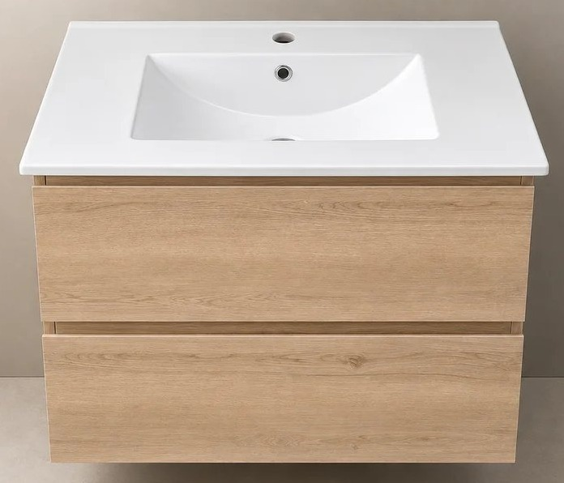
30" Floating Vanity — Wood
30" x 18" · Two drawers
The perfect blend of modern style and practical storage. A warm wood-finish PVC construction resists moisture and daily wear. Two spacious drawers provide ample space for bathroom essentials while keeping the countertop clutter-free. The sleek wall-mounted design creates an open, airy feel — easy to install and built with durable, long-lasting materials.
$365 USD
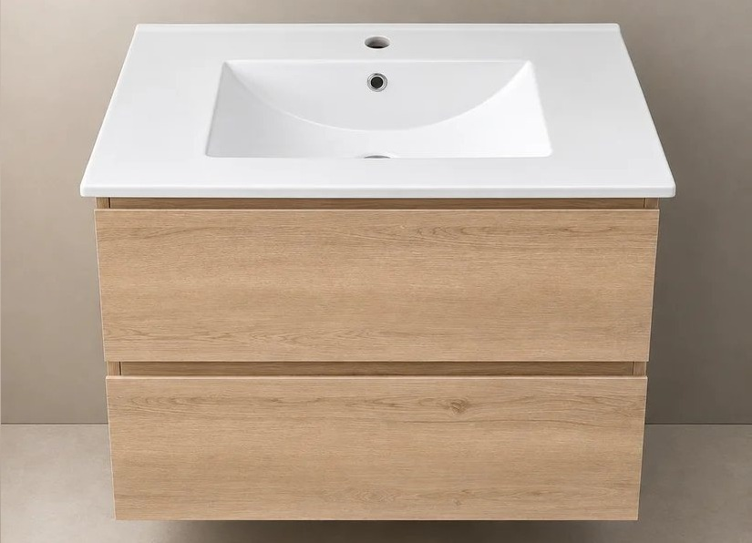
36" Floating Vanity — Wood
36" x 18" · Two drawers
Sleek and modern floating vanity designed to maximize bathroom space while adding contemporary style. A warm wood-tone PVC finish resists moisture and daily wear. Two spacious drawers provide convenient storage, keeping countertops clutter-free. Perfect for small to medium-sized spaces seeking a sophisticated storage solution with clean lines.
$435 USD
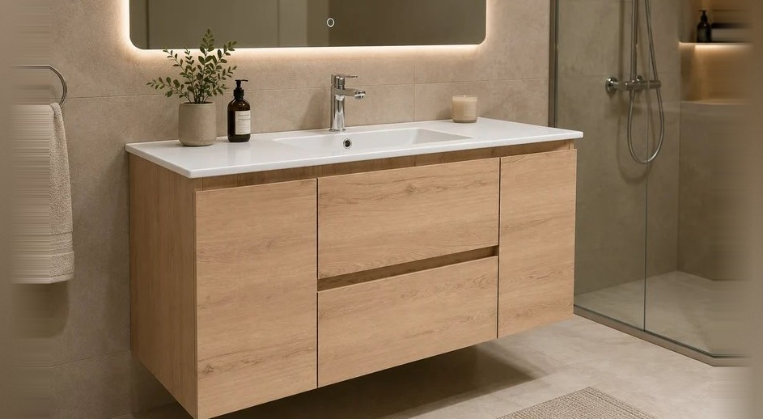
48" Floating Vanity — Wood
48" x 18" · Two drawers, two doors
Create a modern bathroom focal point with this floating vanity. Crafted from durable PVC in a warm wood tone, it combines style with practicality. Two spacious drawers keep daily essentials organized and accessible, while two cabinet doors hide away larger items and plumbing. The floating design opens up the floor, making even compact spaces feel larger and easier to clean.
$570 USD
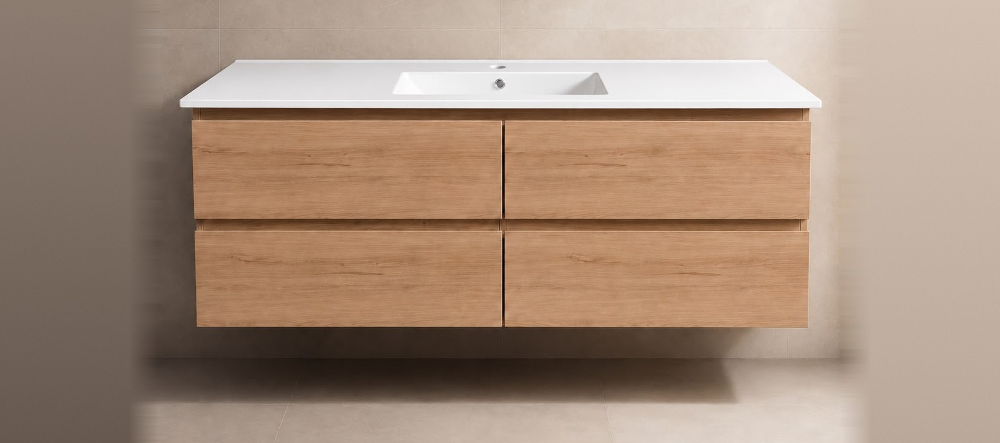
60" Floating Vanity — Wood, Single Sink
60" x 18" · Four drawers · Single sink
Our largest single-sink floating vanity in a warm wood tone, with four spacious drawers for generous storage without a double-sink footprint. Durable PVC construction resists moisture and humidity. Wall-mounted design maximizes floor space — ideal for a primary bath that wants scale without going double-sink.
$745 USD
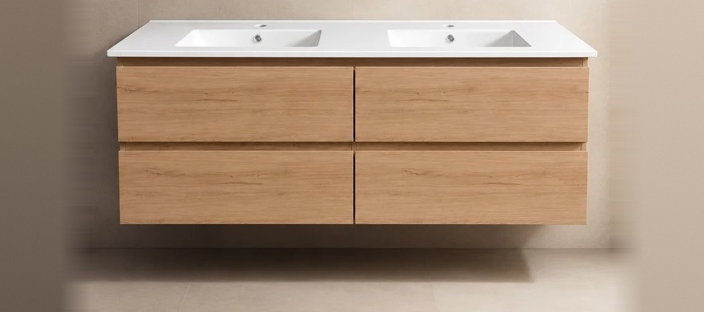
60" Floating Vanity — Wood, Double Sink
60" x 18" · Four drawers · Double sink
This floating vanity combines modern design with functional storage. The 60" x 18" footprint fits seamlessly into contemporary bathrooms while maximizing counter space. Constructed with durable PVC in a natural wood color, it resists moisture and daily wear. Four spacious drawers offer ample organization for toiletries, towels, and bathroom essentials, with a wall-mounted design for a sleek, elevated look.
$765 USD
Floating Vanity — White, Door Front
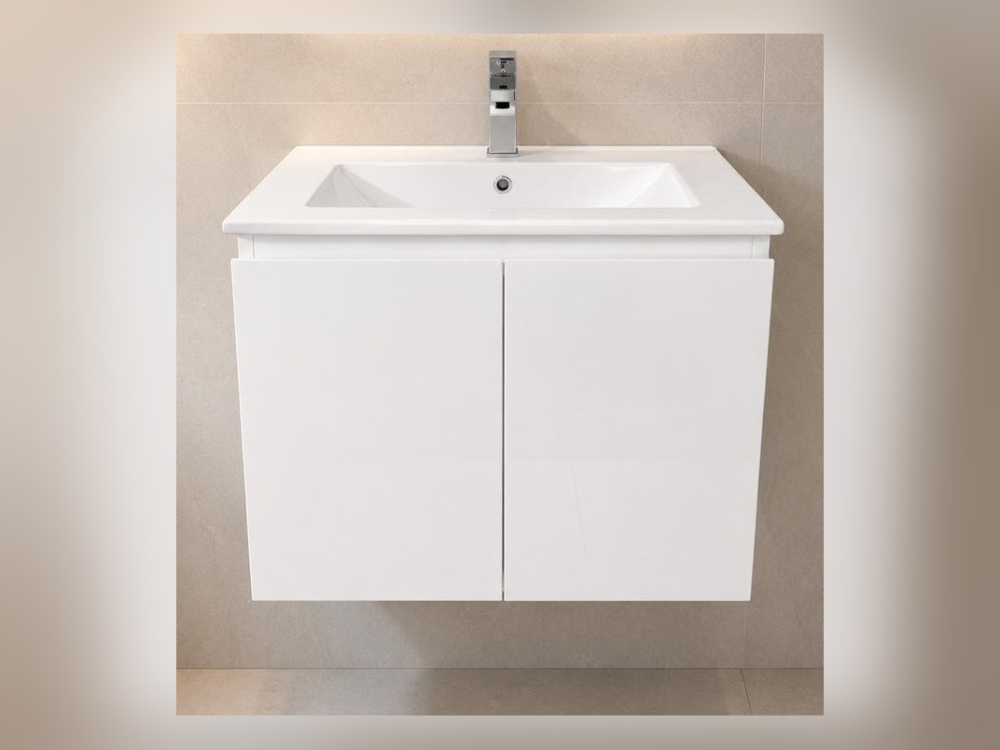
24" Floating Vanity — White, Door Front
24" x 18" · Two doors
Elegant floating vanity with a clean, door-fronted profile. Sleek white PVC construction resists moisture and humidity, and the two-door cabinet opens to a full, uninterrupted interior — ideal for towels, cleaning supplies, and larger bathroom essentials that don’t fit neatly in a drawer. Wall-mounted installation keeps the floor open and makes cleaning underneath effortless. Perfect for a compact bathroom that still wants real storage.
$220 USD
30" Floating Vanity — White, Door Front
30" x 18" · One door, two drawers
A floating vanity that pairs a full-height cabinet door with two side drawers — room for towels and bulkier items behind the door, quick-access drawers for the everyday essentials. White PVC construction resists moisture and humidity. Wall-mounted design keeps the floor open and the bathroom feeling larger.
$295 USD
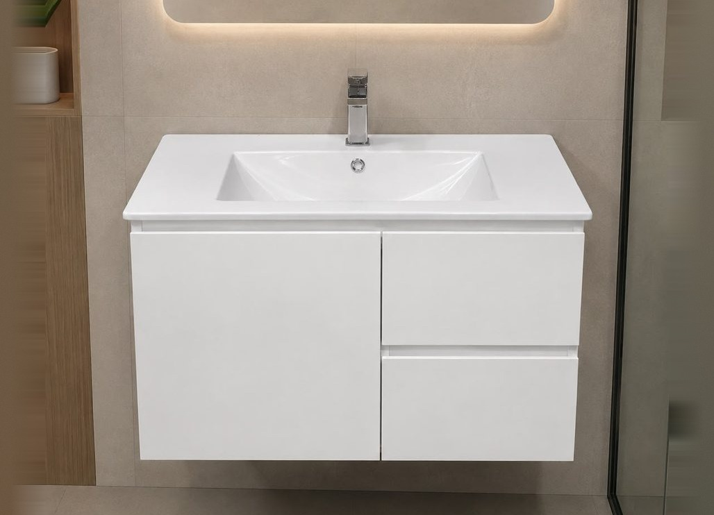
36" Floating Vanity — White, Door Front
36" x 18" · Two drawers, two doors
A floating vanity with a stack of two drawers alongside a pair of cabinet doors — quick-access drawers for the everyday essentials, extra room behind the doors for towels and bulkier items. White PVC construction resists moisture and daily wear. Wall-mounted design keeps the floor open and the bathroom feeling larger.
$350 USD
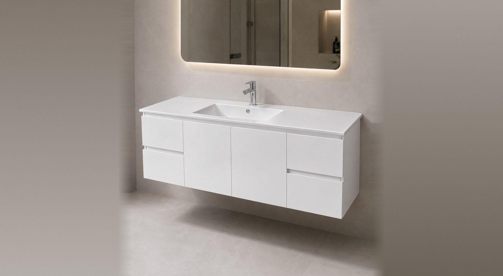
48" Floating Vanity — White, Door Front
48" x 18" · Four drawers, two doors
A wider floating vanity built for a busier bathroom. Two drawers flank a central two-door cabinet, giving quick-access storage on both sides plus a full interior for towels and larger essentials. Durable white PVC resists moisture and daily wear. Wall-mounted for an open, airy feel and effortless cleaning underneath.
$550 USD
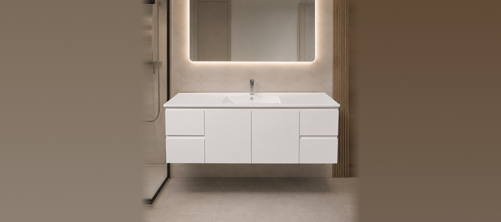
60" Floating Vanity — White, Door Front, Single Sink
60" x 18" · Four drawers, two doors · Single sink
Our largest single-sink floating vanity, with two drawers on each side of a central two-door cabinet for serious storage without a double-sink footprint. White PVC construction resists moisture and humidity. Wall-mounted design maximizes floor space — ideal for a primary bath that wants scale without going double-sink.
$750 USD
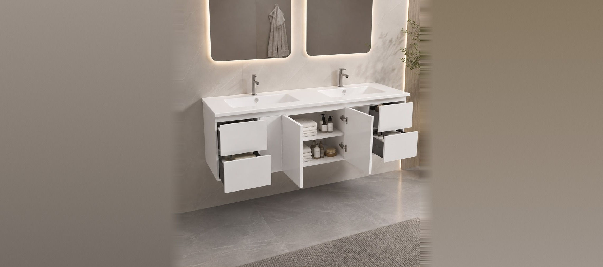
60" Floating Vanity — White, Door Front, Double Sink
60" x 18" · Four drawers, two doors · Double sink
Our largest floating vanity, with two full basins and generous storage — two drawers on each side plus a central two-door cabinet with open shelving inside for towels and toiletries. White PVC construction resists moisture and humidity. Wall-mounted design keeps the floor open — built for a shared primary bath.
$800 USD
Freestanding Vanity — White, Door Front
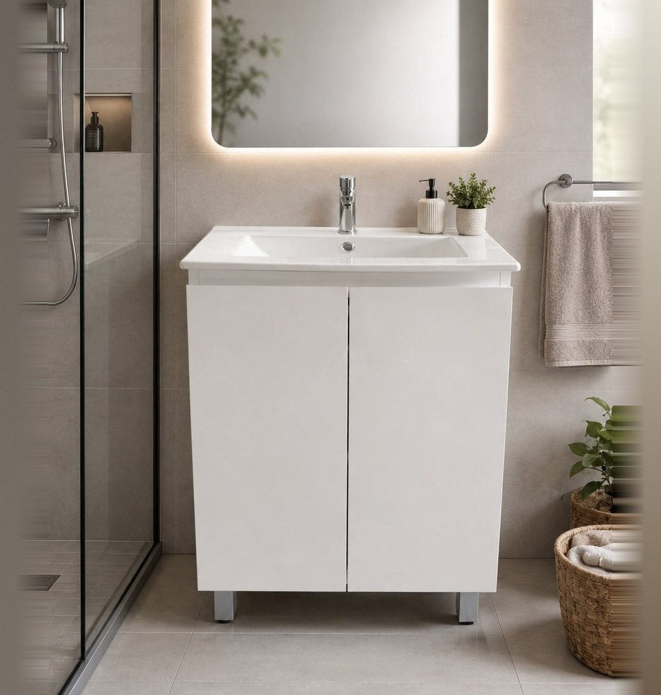
24" Freestanding Vanity — White, Door Front
24" x 18" · Two doors
A freestanding vanity with a clean, door-fronted profile, standing on its own sturdy legs rather than mounting to the wall. Sleek white PVC construction resists moisture and humidity, and the two-door cabinet opens to a full, uninterrupted interior for towels and larger bathroom essentials. No wall-anchoring required — sets up quickly on any wall type. A great fit for a compact bathroom that still wants real storage.
$300 USD
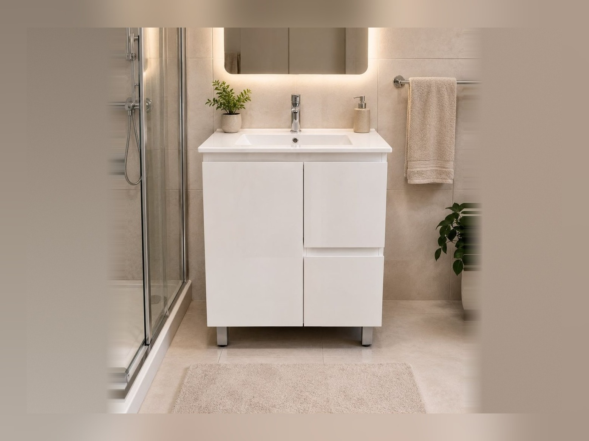
30" Freestanding Vanity — White, Door Front
30" x 18" · One door, two drawers
A freestanding vanity that pairs a full-height cabinet door with two side drawers — room for towels and bulkier items behind the door, quick-access drawers for the everyday essentials. White PVC construction resists moisture and humidity. Stands on its own legs for a solid, freestanding footprint that works with any wall.
$350 USD
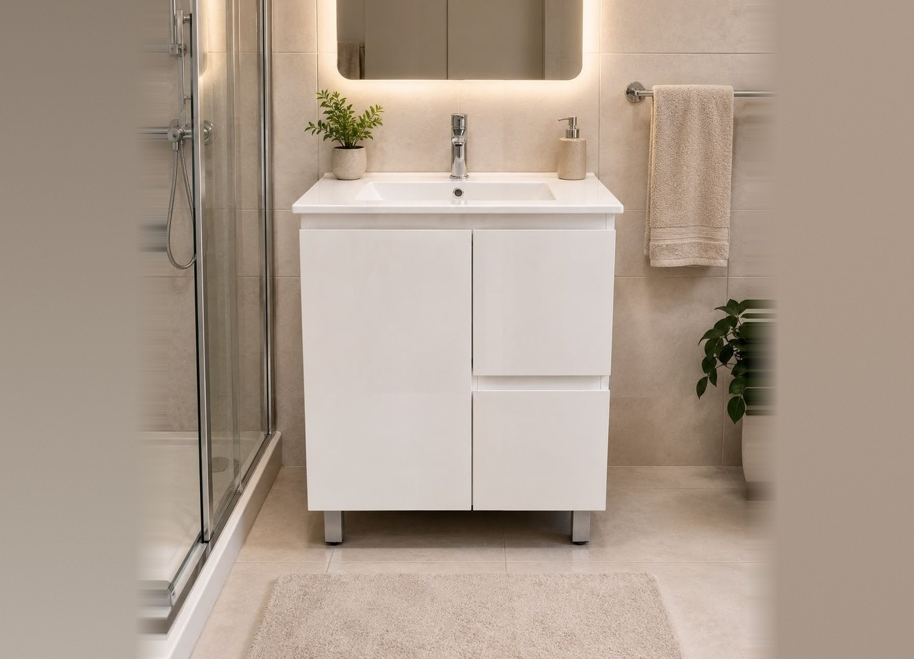
36" Freestanding Vanity — White, Door Front
36" x 18" · Two drawers, two doors
A freestanding vanity with a stack of two drawers alongside a pair of cabinet doors — quick-access drawers for the everyday essentials, extra room behind the doors for towels and bulkier items. White PVC construction resists moisture and daily wear. Sturdy leg construction means no wall-mounting hardware and a classic, grounded look.
$440 USD
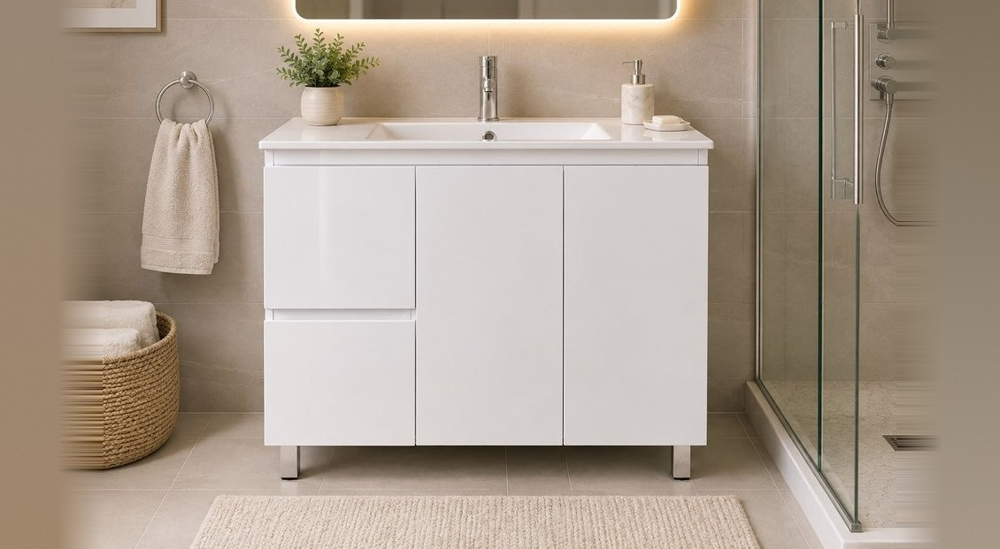
48" Freestanding Vanity — White, Door Front
48" x 18" · Four drawers, two doors
A wider freestanding vanity built for a busier bathroom, with two drawers on each side of a central two-door cabinet — quick-access storage on both sides plus a full interior for towels and larger essentials. Durable white PVC resists moisture and daily wear. Freestanding on its own legs — sets up without anchoring into wall studs.
$650 USD
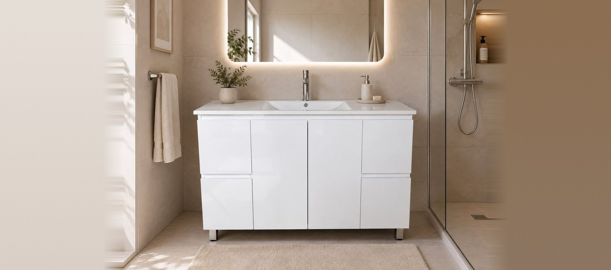
60" Freestanding Vanity — White, Door Front, Single Sink
60" x 18" · Four drawers, two doors · Single sink
Our largest single-sink freestanding vanity, with two drawers on each side of a central two-door cabinet for serious storage without a double-sink footprint. White PVC construction resists moisture and humidity. Stands solidly on its own legs — ideal for a primary bath that wants scale without going double-sink.
$800 USD
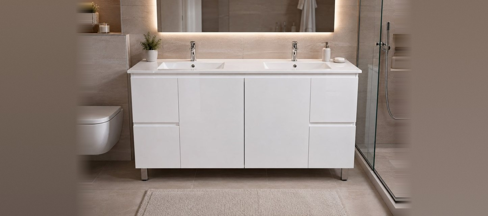
60" Freestanding Vanity — White, Door Front, Double Sink
60" x 18" · Four drawers, two doors · Double sink
Our largest freestanding vanity, with two full basins and generous storage — two drawers on each side plus a central two-door cabinet with open shelving inside for towels and toiletries. White PVC construction resists moisture and humidity. Sturdy leg construction gives it a grounded, classic stance — built for a shared primary bath.
$850 USD
Freestanding Vanity — Wood, Door Front
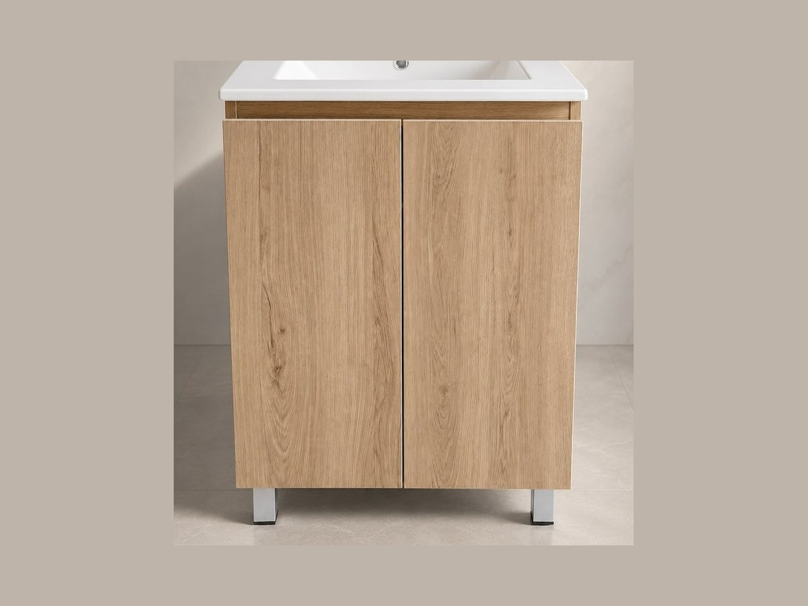
24" Freestanding Vanity — Wood, Door Front
24" x 18" · Two doors
A freestanding vanity in a warm wood finish, standing on its own sturdy legs rather than mounting to the wall. The two-door cabinet opens to a full, uninterrupted interior for towels and larger bathroom essentials. Durable PVC construction resists moisture and humidity — no wall-anchoring required, sets up on any wall type.
$315 USD
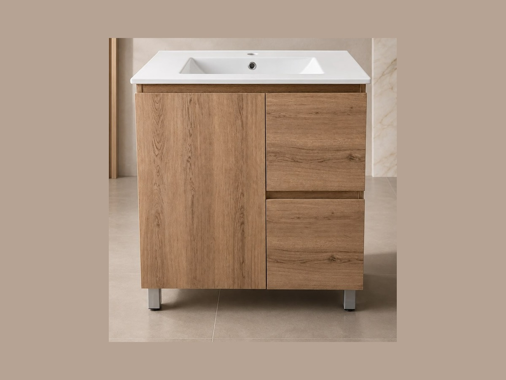
30" Freestanding Vanity — Wood, Door Front
30" x 18" · One door, two drawers
A freestanding vanity in warm wood that pairs a full-height cabinet door with two side drawers — room for towels and bulkier items behind the door, quick-access drawers for the everyday essentials. Stands on its own legs for a solid, freestanding footprint that works with any wall.
$400 USD
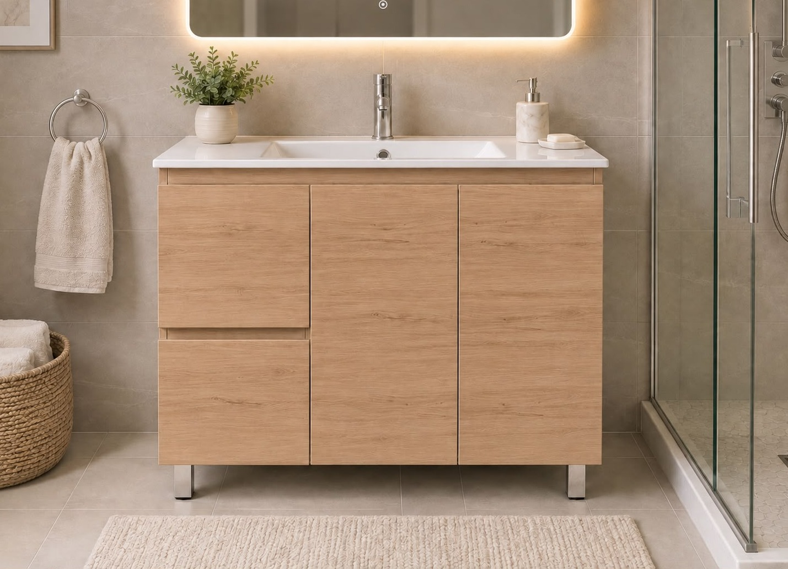
36" Freestanding Vanity — Wood, Door Front
36" x 18" · Two drawers, two doors
A freestanding vanity in warm wood with a stack of two drawers alongside a pair of cabinet doors — quick-access drawers for the everyday essentials, extra room behind the doors for towels and bulkier items. Sturdy leg construction means no wall-mounting hardware and a classic, grounded look.
$460 USD
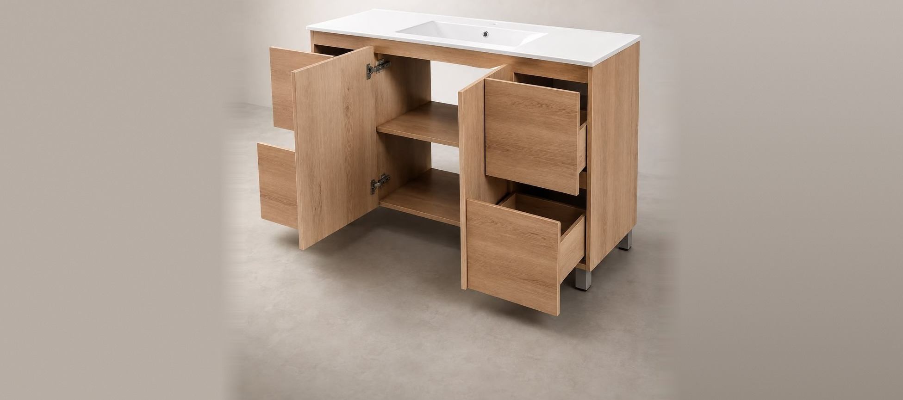
48" Freestanding Vanity — Wood, Door Front
48" x 18" · Four drawers, two doors
A wider freestanding vanity in warm wood, built for a busier bathroom, with two drawers on each side of a central two-door cabinet — quick-access storage on both sides plus a full interior for towels and larger essentials. Durable PVC construction resists moisture and daily wear. Freestanding on its own legs — sets up without anchoring into wall studs.
$660 USD
60" Freestanding Vanity — Wood, Door Front, Single Sink
60" x 18" · Four drawers, two doors · Single sink
Our largest single-sink freestanding vanity in warm wood, with two drawers on each side of a central two-door cabinet for serious storage without a double-sink footprint. Stands solidly on its own legs — ideal for a primary bath that wants scale without going double-sink.
$905 USD
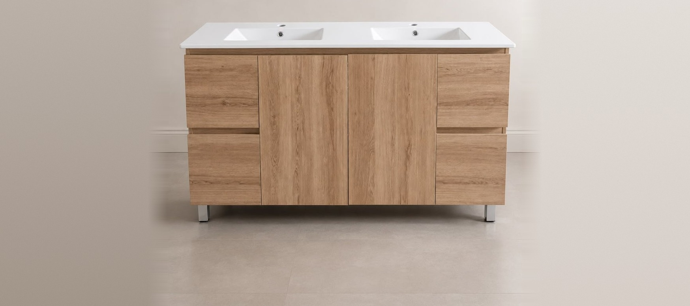
60" Freestanding Vanity — Wood, Door Front, Double Sink
60" x 18" · Four drawers, two doors · Double sink
Our largest freestanding vanity in warm wood, with two full basins and generous storage — two drawers on each side plus a central two-door cabinet with open shelving inside for towels and toiletries. Sturdy leg construction gives it a grounded, classic stance — built for a shared primary bath.
$960 USD
Prices reflect current in-store pricing and may change without notice.